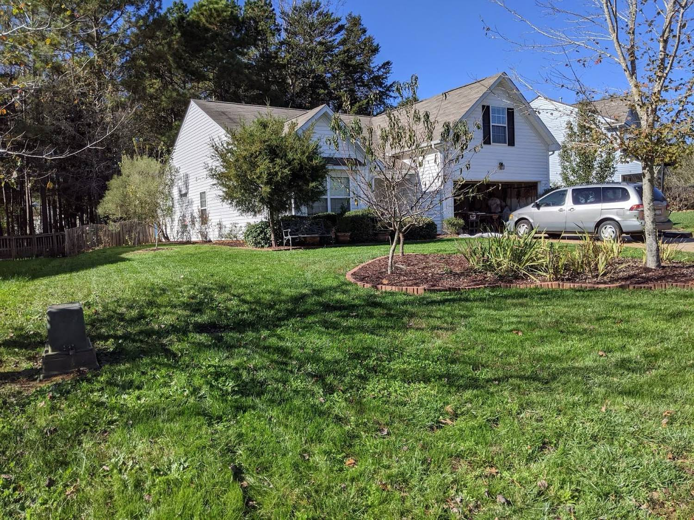
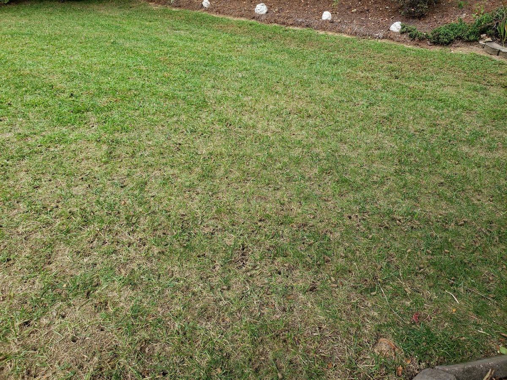
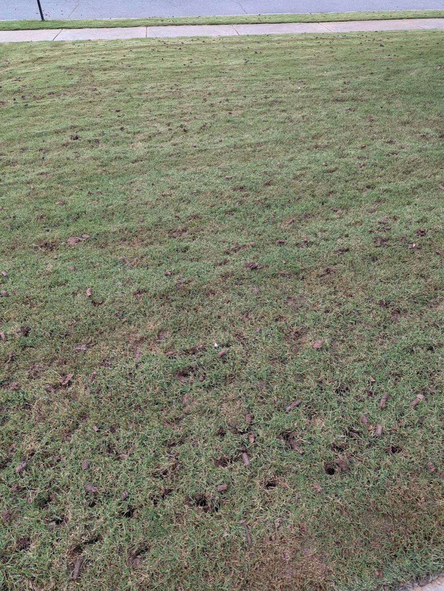
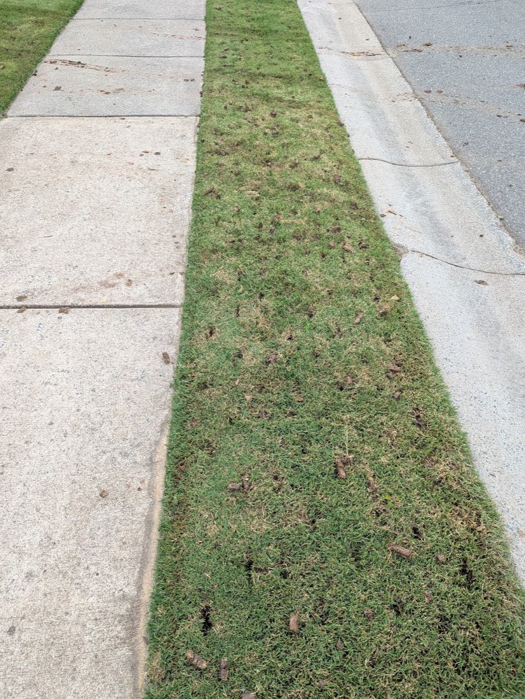
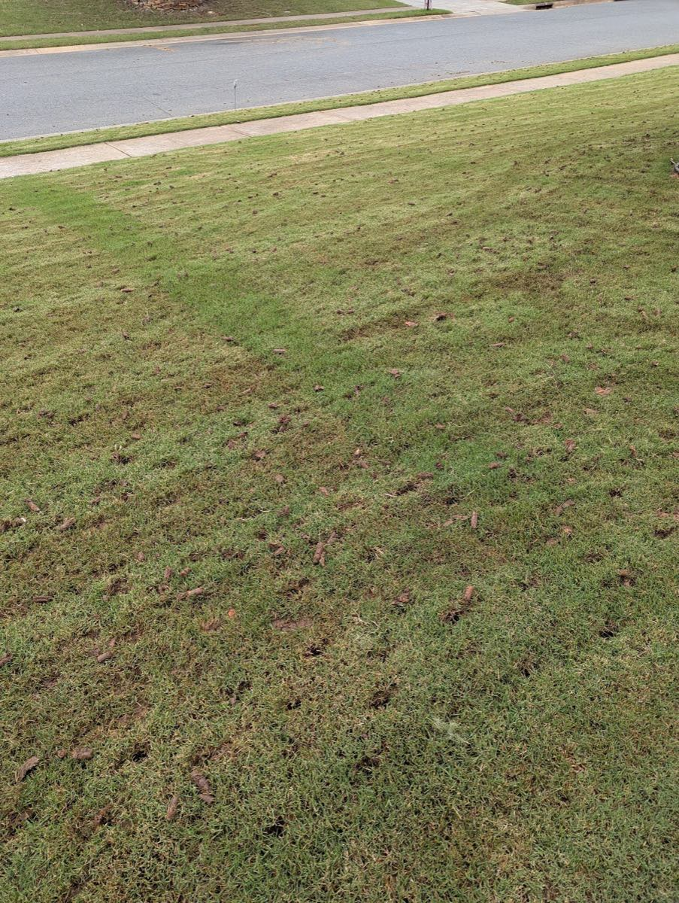

Core Aeration
Pulling real soil cores across the full lawn to relieve compaction and open the root zone.

We do one thing and do it right — pulling real cores across every inch of your yard and overseeding so thin, compacted turf comes back thick. Serving Monroe and Union County.
Compacted soil and thatch choke out roots — water and fertilizer run off instead of soaking in. Core aeration pulls thousands of small plugs so air, water and seed reach the root zone. Pair it with overseeding and a thin lawn fills back in.

A focused service list built around getting turf healthy — no padded menu, just the work that moves the needle.
Pulling real soil cores across the full lawn to relieve compaction and open the root zone.
Fresh seed worked in right after aeration and timed to the season so it germinates and fills in.
Feeding programs that build a deeper green once the lawn can finally take it up.
Open Monday–Sunday, 8am–4pm — call (704) 998-8156 to get on the schedule.
Photos from actual jobs — the cores, the fill-in, the finished yard.



Customers keep coming back season after season — here are a few, straight from Google.
“I had core aeration and seeding done for the 2nd year in a row and they do excellent work! The guys, Cory and Devin, listened to all my concerns.”
“I was so impressed with their service because they made sure to aerate every single inch of my yard, including all the edges and corners.”
“I’ve used Green Yard Aeration for a minimum of 5 years. Loyalty speaks volumes about the type of service these guys deliver. They have always shown up on the day scheduled.”
Call or email and we’ll get you on the schedule for the right window this season.